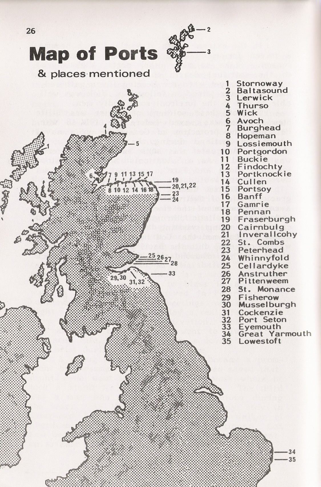

Table of Contents
📝
Introduction
Introduction: The 1921 Spiritual Awakening
1
Chapter 1
Fisherfolk
2
Chapter 2
God's Instruments
3
Chapter 3
East Anglia
4
Chapter 4
South Firth
5
Chapter 5
Whinnyfold
6
Chapter 6
Peterhead
7
Chapter 7
Cairnbulg
8
Chapter 8
Fraserburgh
9
Chapter 9
Gamrie
10
Chapter 10
Cullen, Portknockie & Findochty
11
Chapter 11
Burghead and Hopeman
12
Chapter 12
Wick
13
Chapter 13
Thurso
14
Chapter 14
Portsoy
15
Chapter 15
Jock Troup
16
Chapter 16
Report of Revival by William Leed
17
Chapter 17
News Reports
👤
About
About the Author
📜
Credits
Acknowledgements & Credits
Published 1983 by Peterhead Offset Printers. This account covers the six month period from September 1921 to February 1922, plus the Portsoy revival of 1923.
About This Book
The story of the 1921 spiritual awakening amongst the fisherfolk of Scotland, when many lives were changed through simple Gospel preaching under the anointing of God's Holy Spirit.
Chapters
17
Author
Jackie Ritchie
Published
1983
Start Reading
Discover the remarkable story of revival among the Scottish fishing communities.
Read IntroductionScottish Fishing Ports
The revival spread across numerous fishing towns along the Scottish coast. (Click map to enlarge)